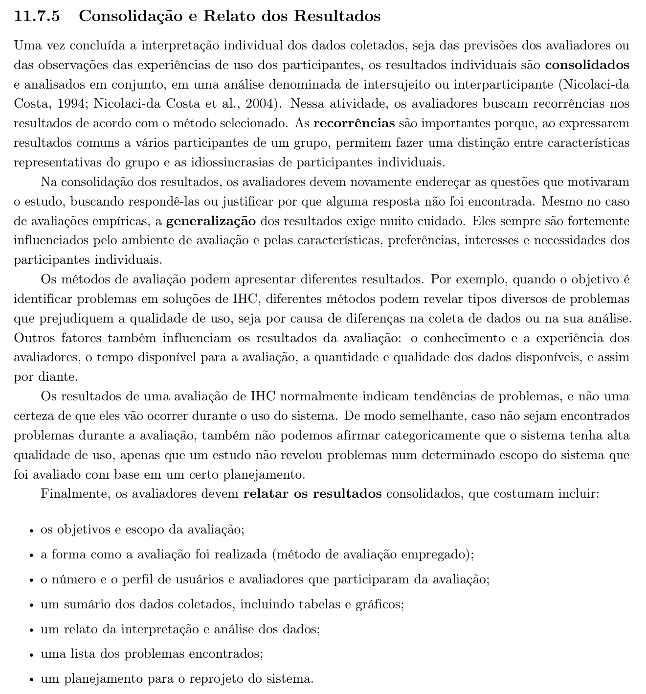

Tabela de Contribuição
| Membro | Contribuição |
|---|---|
| Leonardo da Silva Lopes Júnior | Redação do planejamento do relato, definição da estrutura de tópicos, escala de severidade e modelos de tabela, e publicação desta página no GitHub Pages. |
| Daniel da Silva Batista | Revisão da fundamentação teórica, modelo de sumário por storyboard e critérios de priorização dos problemas. |
| Arthur Sismene Carvalho | Definição do público, formato e prazos de divulgação. |
| Pedro Rocha Ferreira Lima | Revisão técnica e planejamento do reprojeto. |
| Claude (Anthropic) | Auxílio na estruturação textual, extração dos recortes bibliográficos e diagramação em Markdown (conforme Política de Uso de IA). |
Fonte: Leonardo da Silva Lopes Júnior (2026).
Planejamento do Relato dos Resultados da Avaliação do Storyboard
1. Introdução
Este documento define como os resultados da avaliação dos storyboards serão consolidados, classificados e comunicados. Ele é escrito antes da avaliação, e não depois: decidir previamente o que será registrado evita que a estrutura do relato seja moldada pelos achados, o que é uma forma silenciosa de enviesar a conclusão.
O documento não contém resultados. Os resultados obtidos serão publicados em página própria, seguindo exatamente a estrutura aqui definida. O planejamento da avaliação que origina esses resultados está em Planejamento da Avaliação do Storyboard.
2. Metodologia
A estrutura do relato segue a atividade de consolidação e relato dos resultados descrita por Barbosa et al. (2021) na Seção 11.7.5. Concluída a interpretação individual de cada sessão, os resultados são consolidados em uma análise interparticipante, na qual se buscam recorrências — resultados comuns a vários participantes, que permitem distinguir o que é característica do grupo do que é idiossincrasia de um participante isolado. A Figura 1 reproduz o trecho da literatura (Seção 11.7.5, p. 303) que descreve essa atividade e lista o que o relato dos resultados costuma incluir.
Figura 1: Referência Bibliográfica — Consolidação e Relato dos Resultados

Fonte: BARBOSA et al. (2021, p. 303).
Os sete tópicos listados ao final dessa seção do livro formam o sumário obrigatório do relato. A eles o grupo acrescenta um oitavo — a síntese da inspeção por lista de verificação —, porque a avaliação planejada tem duas etapas e a etapa de inspeção produz resultados próprios, que não cabem nos tópicos pensados para sessões com usuários.
3. Estrutura do Relato
O relato dos resultados terá as oito seções abaixo, nesta ordem.
3.1 Objetivos e escopo da avaliação
Retomada dos objetivos geral e específicos e das perguntas PA-01 a PA-05, com a indicação de quais storyboards foram efetivamente avaliados. Divergências entre o escopo planejado e o executado — um storyboard que não ficou pronto, uma entrevista que não aconteceu — são declaradas aqui, não omitidas.
3.2 Método de avaliação empregado
Descrição das duas etapas conduzidas: a inspeção cruzada com a lista de verificação de 20 itens e as entrevistas semiestruturadas com observação. Inclui o cronograma efetivamente realizado, com as datas e durações reais, e o registro de qualquer alteração em relação ao planejado, com a justificativa.
3.3 Número e perfil dos participantes
Quantos usuários e quantos avaliadores participaram, e o perfil de cada participante, sem identificação nominal, conforme o modelo da Tabela 1.
Tabela 1: Modelo de Caracterização dos Participantes
| Código | Faixa etária | Escolaridade | Experiência com concursos | Dispositivo habitual | Persona de referência | Storyboard avaliado |
|---|---|---|---|---|---|---|
| USR-10 | PER-01 — Maria Helena | SB-01 (TAR-01) | ||||
| USR-11 | PER-02 — Lucas | SB-02 (TAR-04) | ||||
| USR-12 | PER-03 — Thiago | SB-03 (TAR-05) | ||||
| USR-13 | PER-04 — Renata | SB-04 (TAR-08) |
Fonte: Leonardo da Silva Lopes Júnior (2026).
3.4 Síntese da inspeção por lista de verificação
Resultado da primeira etapa, consolidado por bloco da lista na Tabela 2.
Tabela 2: Modelo de Síntese da Inspeção
| Bloco da lista | Itens | Conforme | Não conforme | Não se aplica |
|---|---|---|---|---|
| I — Caracterização do storyboard como protótipo | 1 a 4 | |||
| II — Articulação com os cenários | 5 a 8 | |||
| III — Conteúdo dos quadros e técnica de esboço | 9 a 12 | |||
| IV — Uso no processo de design | 13 a 16 | |||
| V — Limitações, concessões e complementos | 17 a 20 | |||
| Total | 20 |
Fonte: Leonardo da Silva Lopes Júnior (2026).
Acompanha a tabela um gráfico de barras horizontais com a contagem de itens conformes por storyboard, permitindo ver de relance qual dos quatro artefatos concentra os defeitos de construção. Cada item "Não conforme" vira obrigatoriamente um problema registrado na seção 3.5.
3.5 Problemas e dificuldades encontrados
Lista de todos os problemas identificados, em inspeção ou em entrevista, um por linha, redigidos de forma objetiva. Cada problema recebe um identificador no formato PSB-nn e é registrado conforme o modelo da Tabela 3.
Tabela 3: Modelo de Registro de Problemas
| ID | Storyboard | Descrição do problema | Origem | Severidade | Recorrência |
|---|---|---|---|---|---|
| PSB-01 | Inspeção / Entrevista | n de 4 |
Fonte: Leonardo da Silva Lopes Júnior (2026).
A coluna Origem registra se o problema veio da inspeção ou da entrevista, porque a diferença importa: um problema previsto pela equipe e confirmado pelo usuário tem peso distinto de um que só apareceu quando um usuário real olhou o desenho.
A coluna Recorrência traz em quantos dos quatro casos o problema apareceu, e é o que operacionaliza a análise interparticipante.
3.6 Sugestões de melhoria
Para cada problema da seção anterior, um registro com: o contexto em que ocorreu, o que o participante fez ou disse, o que se esperava que ele entendesse, o que de fato entendeu, e a alteração proposta para o storyboard, conforme o modelo da Tabela 4.
Tabela 4: Modelo de Registro de Sugestão
| ID do problema | Contexto | Comportamento observado | Resultado esperado | Alteração proposta | Origem da proposta |
|---|---|---|---|---|---|
| PSB-01 | Participante / Equipe |
Fonte: Leonardo da Silva Lopes Júnior (2026).
A última coluna distingue a proposta feita pelo próprio participante daquela elaborada pela equipe a partir do que observou. Propostas dos participantes são registradas tal como foram formuladas, sem reescrita.
3.7 Feedback dos usuários e análise dos resultados
Reúne as opiniões, impressões e comentários espontâneos dos participantes que não se enquadram como problema, e em seguida a interpretação do conjunto: que padrões se repetem entre os quatro casos, que divergências aparecem, e o que isso indica sobre a qualidade dos storyboards como insumo para a prototipação em papel.
É também aqui que as perguntas PA-01 a PA-05 são retomadas uma a uma e respondidas — ou, quando não houver resposta, é registrado por que ela não foi encontrada.
3.8 Sumário dos resultados por storyboard
Visão de uma linha por artefato, para leitura rápida, conforme o modelo da Tabela 5.
Tabela 5: Modelo de Sumário por Storyboard
| Storyboard | Tarefa | Persona | Tarefa reconhecida sem o título? | Problemas de severidade alta | Total de problemas | Decisão |
|---|---|---|---|---|---|---|
| SB-01 | TAR-01 | PER-01 | Sim / Não | Aprovado / Aprovado com ajustes / Refazer |
Fonte: Leonardo da Silva Lopes Júnior (2026).
4. Classificação e Priorização dos Problemas
Todo problema registrado recebe uma severidade, segundo a escala da Tabela 6. A escala foi definida para artefatos de design, e não para sistemas em funcionamento: o critério é o quanto o defeito compromete o uso do storyboard como base para a próxima etapa.
Tabela 6: Escala de Severidade
| Nível | Designação | Critério |
|---|---|---|
| 3 | Alta | Compromete a validade do artefato: a tarefa retratada está incorreta, falta um passo essencial ou o participante não reconhece a tarefa |
| 2 | Média | Não invalida o storyboard, mas dificulta sua leitura ou gera interpretação ambígua de um passo |
| 1 | Baixa | Ajuste de forma: legenda imprecisa, símbolo inconsistente, ordem de leitura pouco clara |
Fonte: Leonardo da Silva Lopes Júnior (2026).
A ordem de correção é dada por severidade primeiro e recorrência em seguida: entre dois problemas de severidade 3, corrige-se antes o que apareceu em mais sessões. Problemas de severidade 3 são bloqueantes — nenhum storyboard avança para a prototipação em papel com um deles em aberto.
5. Público, Formato e Prazo do Relato
A Tabela 7 define o público, o formato e o prazo de divulgação dos resultados.
Tabela 7: Divulgação dos Resultados
| Destinatário | Formato | Prazo |
|---|---|---|
| Equipe do projeto | Reunião de consolidação, com a tabela de problemas aberta | 22/10/2026 |
| Professor e turma | Página Relato dos Resultados da Avaliação do Storyboard no GitHub Pages do grupo | 25/10/2026 |
| Turma | Apresentação da Etapa 4, com o sumário da Tabela 5 e os problemas de severidade alta | Conforme o cronograma da disciplina |
Fonte: Leonardo da Silva Lopes Júnior (2026).
As gravações das sessões não são publicadas. O que vai para o site são os dados já anonimizados e consolidados, conforme o compromisso assumido em Aspectos Éticos.
6. Planejamento do Reprojeto
O relato se encerra com o planejamento do reprojeto, último dos tópicos previstos por Barbosa et al. (2021, p. 303). O reprojeto preserva a base já aprovada e altera apenas o que os resultados indicarem. A Tabela 8 apresenta o modelo de cronograma do reprojeto.
Tabela 8: Modelo de Cronograma de Reprojeto
| Storyboard | Alterações a executar | Executor | Data | Horário |
|---|---|---|---|---|
| SB-01 | Daniel da Silva Batista | 23/10/2026 | ||
| SB-02 | Pedro Rocha Ferreira Lima | 23/10/2026 | ||
| SB-03 | Arthur Sismene Carvalho | 24/10/2026 | ||
| SB-04 | Leonardo da Silva Lopes Júnior | 24/10/2026 |
Fonte: Leonardo da Silva Lopes Júnior (2026).
Cada storyboard reprojetado é submetido novamente aos itens da lista de verificação antes de ser considerado concluído. Com isso, os itens 14 e 16 da lista — que tratam de o artefato ter sido mostrado a usuários e ter passado por mais de uma versão — passam a poder ser respondidos como conformes, fechando o ciclo de iteração.
7. Ressalvas sobre a Interpretação
Três ressalvas serão registradas no próprio relato, porque delimitam o que ele pode e o que não pode afirmar:
- Os resultados indicam tendências de problemas, não certezas. Um problema identificado é um indício de que ele ocorrerá, não uma garantia.
- A ausência de problemas não prova qualidade. Se um storyboard não apresentar problemas, isso significa apenas que um estudo, num escopo determinado e com um planejamento determinado, não os revelou.
- A generalização exige cuidado. Com quatro participantes, os resultados são fortemente influenciados pelas características, preferências e necessidades de cada um. Eles orientam o reprojeto; não descrevem a população de concurseiros.
8. Bibliografia
[1] BARBOSA, Simone D. J. et al. Interação Humano-Computador e Experiência do Usuário. 1. ed. Autopublicação, 2021. ISBN: 978-65-00-19677-1.
[2] PREECE, Jennifer; ROGERS, Yvonne; SHARP, Helen. Design de Interação: além da interação homem-computador. Porto Alegre: Bookman, 2005.
9. Histórico de Versões
| Versão | Data | Descrição | Autor(es) | Revisor(es) |
|---|---|---|---|---|
1.0 |
13/10/2026 | Criação do planejamento do relato dos resultados da avaliação do storyboard: estrutura de tópicos, escala de severidade, modelos de tabela, divulgação e planejamento de reprojeto. | Leonardo da Silva Lopes Júnior | Pedro Rocha Ferreira Lima |
1.1 |
13/10/2026 | Alinhamento com a versão vigente da matriz de tarefas: identificação da tarefa e da persona de cada storyboard nos modelos de tabela. | Leonardo da Silva Lopes Júnior | Pedro Rocha Ferreira Lima |
1.2 |
13/10/2026 | Padronização visual conforme o Planejamento da Avaliação do Storyboard: Tabela de Contribuição antes do título, figura com legenda e fonte centralizadas, numeração das seções e formatação da bibliografia; Leonardo da Silva Lopes Júnior registrado como redator principal e autor das fontes; correção do link para o Planejamento da Avaliação do Storyboard; alinhamento dos prazos de divulgação (Tabela 7) e de reprojeto (Tabela 8) aos prazos de entrega da disciplina. | Leonardo da Silva Lopes Júnior | Arthur Sismene Carvalho |
Fonte: Leonardo da Silva Lopes Júnior (2026).